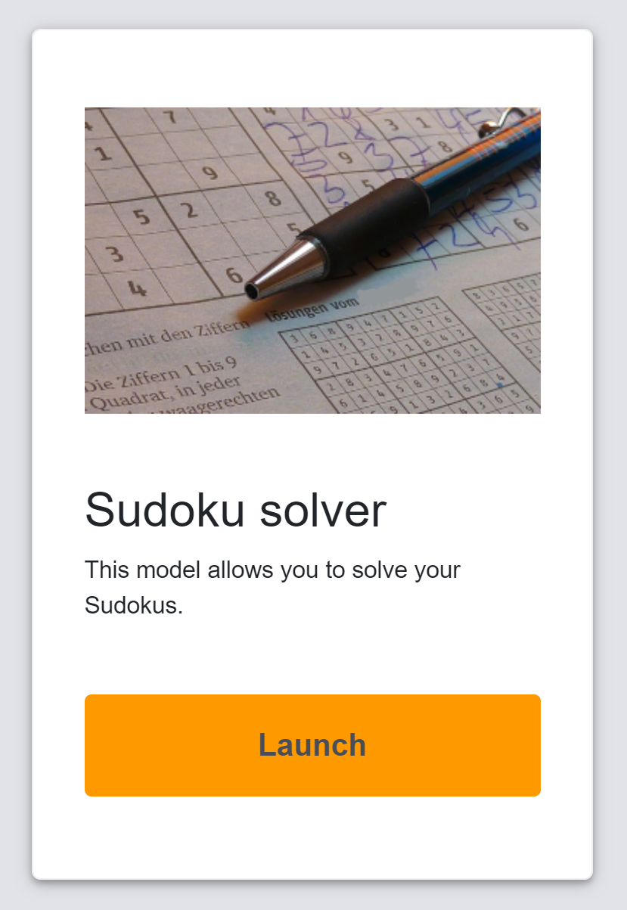
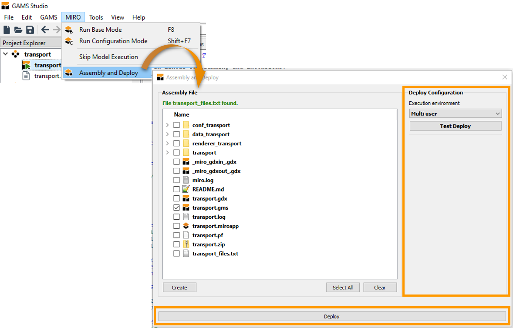
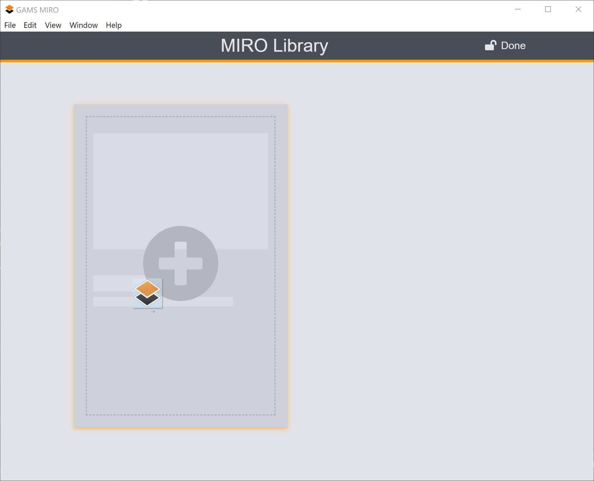
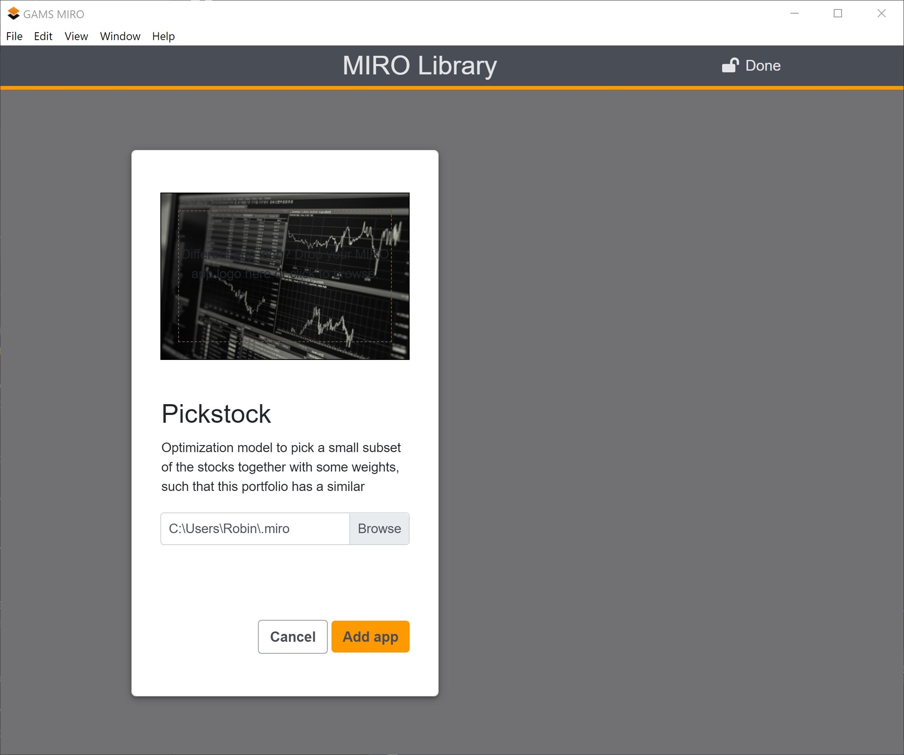
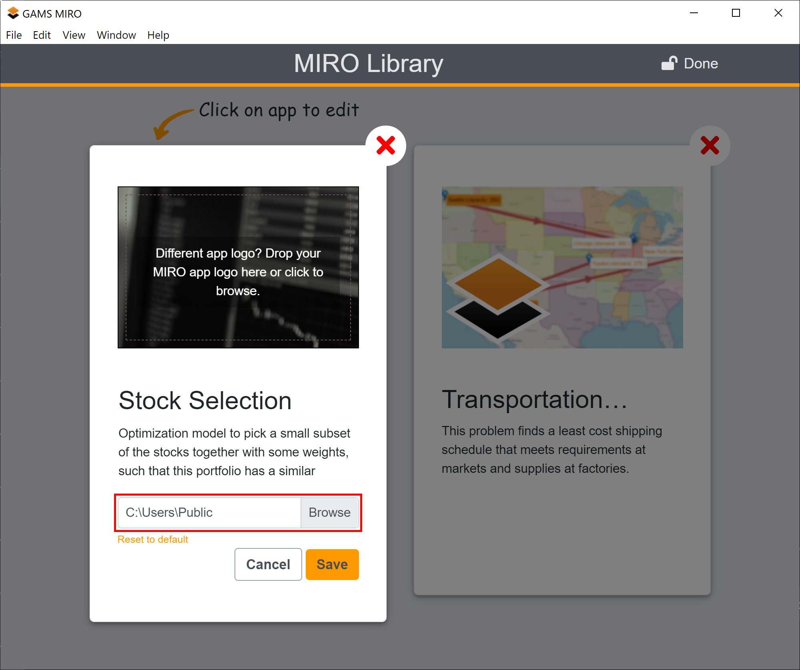

Files or folders created by MIRO (e.g. conf_<modelname>, data_<modelname>, static_<modelname>) do not need to be included in the assembly file. MIRO knows about these files and includes them automatically.
Deployment
Introduction
Once you are happy with the MIRO application you developed, you can deploy it. This chapter guides you through this process.
Deploying a MIRO application is the process of exporting and installing your app so that it can be easily shared and used in the daily business of your end users. Before you can deploy an app, it needs to be fully set up: no further changes to the model or the configuration can be made once it is deployed. In case you did not configure your MIRO app yet, read the chapters about model preparation and configuration.
In order to deploy a MIRO app, you first need to create a model assembly file. All other things described in the following section, like logo, title, web app manifest file, signing the app, are optional.
Create an app bundle
Model assembly file
Before you export your app bundle, MIRO needs to know about the files that belong to your model. This is primarily the main model file, but also all files necessary to calculate all inputs and outputs, e.g. files that are included in the model. To tell MIRO about these files, create a text file in the root directory of your model called <modelname>_files.txt or use GAMS Studio to create this file for you. For the latter go to MIRO → Assembly and Deploy. In the Assembly File section you can select those folders and files which are needed. If you select a folder, all files in it will be included. If you want to use only single files of a folder, you have to expand the folder and select the corresponding file(s).

Attention
If you want to create the text file on your own, specify the relative paths to the files that are part of your model separated by a new line. An example for a model named example can be found below:
example_files.txt
example.gms
data
inc/inc1.inc
inc/inc2.inc
This would result in the files example.gms, inc/inc1.inc, inc/inc2.inc and the entire directory data to be included.
Bundling Data with your App
In case you want to distribute scenario data with your MIRO application, you can do so by simply placing MIROSCEN, GDX, CSV or XLSX files in the data_<modelname> directory. When your MIRO app is started for the first time, these datasets will be stored in the MIRO database. The filename is used as the scenario name. To learn more, read the chapter on importing multiple scenarios on startup. Note that the owner of these scenarios is the user that launches the MIRO app for the first time!
Default Logo
When adding the MIRO app to the MIRO library, the user has the option to choose a logo to quickly identify your app. If you want to suggest a logo, simply place an image (format: png/jpg/jpeg; aspect ratio: 8 × 5 fits best) with the name app_logo inside the static_<modelname> folder before deploying. When a user imports your app, this logo will be suggested to them. If no such file is found, a default logo is used.

Note: The app_logo logo described here is located in the same folder, but is independent of the logo set in the Configuration Mode.
Default Title and Description
When adding a new MIRO app to the library, a user can specify an app title as well as a short description. If you want to provide defaults for these, you can do so via a JSON file app_info.json inside the static_<modelname> folder. The JSON file has to have the following structure:
{
"title": "Example app",
"description": "This is my first MIRO app"
}App ID
Each MIRO app has its own identifier. When using MIRO Server, the app ID determines the URL under which the app can be reached. The ID is also used to access an app via the MIRO Server REST API. Within a MIRO instance (MIRO Desktop or MIRO Server), each ID must be unique. The default app id is the lowercase modelname, i.e. the lowercase name of the main GMS file (without .gms extension).
An app id must meet the following requirements:
- Max. 60 characters
- Must only contain lowercase ASCII characters, digits, _ or -
- Has to start with a lowercase ASCII character or digit
If the default app id does not meet the requirements (note that the default ID is always derived with lowercase characters), an alternative id must be specified manually. This can be done in the app_info.json inside the static_<modelname> folder.
{
"title": "Example app",
"description": "This is my first MIRO app",
"appId": "my_app123"
}Note that unlike the title and description, the app id cannot be changed after the app has been deployed.
Tip:
The app id can be used to register multiple MIRO apps based on the same model by assigning an individual ID for each app.
Make your App Mobile Friendly
If you plan to deploy your app on MIRO Server, you can add a custom web app manifest. This allows you to customize the name, logo, and more when your app is added to a user's home screen. To create a custom manifest, simply create a new manifest.json file in the static_<modelname> directory of your app. You can use the following template:
{
"theme_color": "#ffffff",
"background_color": "#ffffff",
"display": "standalone",
"start_url": "..",
"short_name": "MIRO app",
"name": "This is a GAMS MIRO app",
"icons": [
{
"src": "logo192.png",
"sizes": "192x192",
"type": "image/png"
},
{
"src": "logo512.png",
"sizes": "512x512",
"type": "image/png"
}
]
}
Make sure you also add the two icons logo192.png (192x192 pixels) and logo512.png (512x512 pixels) to the static_<modelname> directory. They will be used when adding your app to the home screen on Android devices. For iOS devices, add another icon named apple-touch-icon.png with a size of 180x180 pixels. The pickstock sample application contains a manifest that you can use as a reference.
Attention
There is a known issue where the apple-touch-icon.png does not display properly on Apple devices.
Sign your MIRO Apps
MIRO applications contain a lot of code (the GAMS model, custom renderers, etc.) that can be used for malicious purposes. To better protect you from these harmful apps, MIRO allows you to sign apps so you can be sure they come from developers you trust. To ensure the authenticity of an app, MIRO uses asymmetric encryption. The first time you import an app from an untrusted developer, you are asked if you want to trust that developer. To identify the developer, the fingerprint of the developer's RSA public key is displayed. This fingerprint can be transmitted through a different channel than the one you used to get the app.
In the following section we will explain how developers of MIRO apps can sign their apps.
To sign your apps, you need to have an RSA keypair. If
you do not already have one, you can create one e.g.
using your SSH client: on macOS/Linux you can use
OpenSSH:
>ssh-keygen -t
rsa
or
PuTTY
on Windows: open the PuTTYgen tool, select RSA with a
size of at least 2048 bits, follow the instructions and
store the private key. Afterwards, you will need to
convert your key to the PEM format. To do so, load the
private key with PuTTYgen, go to the
Conversions menu and select
Export OpenSSH key (force new file format).
Once you have your private key, you should create a directory called signature in the MIRO app path. The location of the MIRO app path can be found in the Preferences window. Inside the signature directory, place your key file and name it private-key.pem. If you have encrypted your key with a passphrase, place a file named key-passphrase (no extension) next to your private key. This file should contain only the passphrase for your key.
Public keys that you have trusted are stored (in PEM format) in a directory named: known_keys in your MIRO app path.
Note:
If you want to know how signing and validating MIROAPP files works in detail, read here.
Export app
Once you specified the files that belong to your model, you are ready to export your MIRO app!

In GAMS Studio, select Assembly and Deploy. In the Deploy Configuration section, you need to decide how your model shall be executed (execution environment). There are three options:
- Multi-user: This option allows your app to be used by multiple users simultaneously. Your model files are extracted at a random location, which is different for each user, and your model is executed from there.
- Single-user: Your model is executed inside the model directory. No extraction of your model files is required, but this means that you can NOT have multiple users accessing your MIRO app at the same time.
-
Local multi-user (uses idir): With this
third option, your model is again executed from a
random location, but this time no model data is
extracted here. Instead, GAMS is executed with an
input directory
pointing to the path where your model files are
located. Choose this option ONLY if you have many
large files that belong to your model and
extracting them would take a long time. Be aware
that due to the fact that
idir is used, your model
might brake! For example, if you use
$callor the execution-time equivalentexecute(or related functions), the relative paths used in these calls will no longer exist (since the curdir is now a random location). The solution is to prefix all these relative paths with%gams.idir1%. For example, in order to import an Excel file test.xlsx, GDXXRW needs to be called like this: $call gdxxrw i=%gams.idir1%test.xlsx. Alternatively, you can also use absolute paths (e.g. via$setNames "%gams.input%" fp fn fe(see here).
Adjusting all affected paths is potentially a lot of work, so we strongly advise against using this option unless you know what you are doing!
Advice
We advise you to test your MIRO app before distributing it. GAMS Studio offers an option test deployment. This simulates how your end users will experience the MIRO app (MIRO is launched in the specified execution environment). In particular, you should check whether you forgot to include important files in the model assembly file.
If everything is set, click on Deploy. That's it! A new file <modelname>.miroapp is created in your model directory. You can now distribute this MIRO app directly to your end users!
In order to deploy a GAMSPy/MIRO app, you first need to create a model assembly file. If everything is set, simply run the command below. That's it! A new file <modelname>.miroapp is created in your model directory. You can now distribute this MIRO app directly to your end users!
> gamspy run miro --mode="deploy" --model
<path_to_your_model> [--path
<path_to_your_MIRO_installation>]
where <path_to_your_model> is the path to your main .py file and <path_to_your_MIRO_installation> is the path to your MIRO executable file (e.g. C:\Program Files\GAMS MIRO\GAMS MIRO.exe on Windows, /Applications/GAMS MIRO.app on macOS or ~/GAMS-MIRO-2.9.0.AppImage on Linux). You can omit --path in case MIRO is installed in one of the standard locations on Windows or macOS.
Note that you can also set the MIRO installation path as an environment variable: MIRO_PATH, so that you do not have to enter it every time you use the GAMSPy CLI.
Note:
If you want to learn more about the file structure of MIROAPP files, see the chapter on File Formats.
Install the MIRO App
To install a new MIRO app, launch GAMS MIRO Desktop. You will see your personal MIRO library with all the MIRO apps you have installed.

To add a new app to the library, either double click the app in your file browser (only on Windows/macOS) or click on "Edit" (Ctrl + E or ⌘ + E on macOS) and drag&drop the app onto the "+" button. Alternatively, you can click on the "+" button and browse to the location of the new app manually.

Once MIRO validated the new app, you can assign a title, a short description as well as a logo.

Once you are happy with the setup, click on Add app. Your app is now installed in your library and you can launch it by clicking the Launch button.
Customize your Installed MIRO Apps
The MIRO Desktop interface offers several ways to control the behavior of your MIRO apps. To access these settings click on File → Preferences (or GAMS MIRO → Preferences if you are on macOS). Alternatively, press F7 (or ⌘ + , on macOS). You will notice that there are three categories of settings: General settings, settings related to Paths and to the Environment. In the General category you can specify whether you want to launch your MIRO apps in a new window of the MIRO Launcher or in your default browser. You can set the language, the color theme, specify the level of detail of information to be logged as well as the number of days you want your log files to be stored for (-1 being no limit).
In the Paths section, you can control the location where your MIRO apps are stored/loaded from and the location where log files are kept. Additionally, in case you want to use a specific GAMS version or the MIRO Launcher was unable to locate GAMS automatically, you can set the path to GAMS here. On Linux, you can also specify the path to the required R installation here.
| Option | Description | |
|---|---|---|
| General | Launch MIRO apps in your browser? | If this option is set, MIRO applications are started in the users default web browser. If not set, the internal chromium browser is used instead. |
| Language | Sets the language. The user can choose between English, German and Chinese. Further languages are planned. | |
| Color theme | Sets the color theme for all apps. The following themes are available: "Default theme", "Black and white", "Green forest", "Tawny", "Dark blue", "Red wine". | |
| Logging level | Determines the logging scope. TRACE = very high, FATAL = very low | |
| Number of days log files are stored | A value of -1 means that the logs are never deleted. | |
| Paths | MIRO app path | Path to the working directory of GAMS MIRO. Deployed apps, scenario data and log files are stored here. On Windows the default location is C:\Users\<username>\.miro |
| GAMS path | Path to the GAMS installation folder. | |
| Python path | Path to the Python installation folder. Note that both GAMSPy and all other third-party dependencies for this Python interpreter must be installed for your GAMSPy-MIRO application to work. | |
| Log path | Location where the log files should be saved. | |
| R path (Linux only) | Path to the R location. A current R version (3.6 or later) is required for using GAMS MIRO. Since R is bundled with MIRO on Windows and MacOS, this option is only available on Linux systems. | |
| GAMS Engine | Execution of models on GAMS Engine? | If enabled, GAMS jobs will be run in the cloud instead of on the local machine. |
| Engine URL | URL where GAMS Engine is hosted, e.g. https://engine.gams.com. | |
| Namespace | The namespace to solve the model in. Engine uses these namespaces to organize GAMS models. Your user account needs at least write and execute permissions on that namespace. Further information can be found here. | |
| Login via | Login method to use. Options supported by MIRO are: Username/Password for logging in with username and password, JWT for logging in with an authentication token (can e.g. be generated from the Engine UI) or using an LDAP/OAuth2/OIDC identity provider. |
Environment
In the Environment section, you can import a
customized environment to be used by your MIRO apps. This
is useful, for example, if you want to run
custom analysis scripts
that require external software not in your PATH or to
store credentials to be used by
custom data connectors.
Environment files are JSON files of the following form:
{
"ENV_VAR_1": "VAL_1",
"ENV_VAR_2": "VAL_2"
}Environment variables names must consist solely of uppercase letters, digits and '_' (underscore) and must not start with a digit. Note that the PATH environment variable is special in that MIRO prepends it to the already existing PATH.
As an example, let's say we want to run the analysis script that comes with the pickstock example. We do this by first setting up a Python environment for it:
> python -m venv venv
> venv\Scripts\activate.bat
(venv) > pip install jupyter pandas matplotlib
(venv) > python <path_to_gams>\apifiles\Python\api_39\setup.py build -b %TEMP% install
> venv\Scripts\activate.bat
(venv) > pip install jupyter pandas matplotlib
(venv) > python <path_to_gams>\apifiles\Python\api_39\setup.py build -b %TEMP% install
> python -m venv venv
> source venv/bin/activate
(venv) > pip install jupyter pandas matplotlib
(venv) > python <path_to_gams>/apifiles/Python/api_39/setup.py build -b ${TMPDIR} install
> source venv/bin/activate
(venv) > pip install jupyter pandas matplotlib
(venv) > python <path_to_gams>/apifiles/Python/api_39/setup.py build -b ${TMPDIR} install
Now all we have to do is tell MIRO to use this Python environment by adding it to the PATH via the following environment file:
{
"PATH": "<path_to_venv>/venv/bin"
}Collaboration
Share MIRO apps
This section covers the options you have when you want to share MIRO apps and/or scenarios between multiple users.
First, you need to specify a location in your file system where your MIRO apps are stored. To change the directory where MIRO apps are stored, go to Preferences → Paths and change the "MIRO app path" to a directory where all collaborating users have at least read access. Users that are allowed to add/edit/remove apps need write access as well. Note that this only handles the location of where the MIRO apps are stored and loaded from, not the location of the MIRO database that the apps use. If you want your users to share the same database (in order to collaborate), you can specify its location by clicking on Edit (Ctrl + E or ⌘ + E on macOS).

Note:
Collaborators need both read and write permissions at the database location to load and save scenarios!
Share settings
In addition to sharing MIRO apps, you may want to share settings such as "Paths" to the GAMS/R installation or even "General" settings such as the log file verbosity. To do so, you have to create a file: settings.json at the location of the shared MIRO app path.
Let's look at an example: You created a shared directory <sharedFolder> where you have read and write access and all the other collaborators only have read permissions. You select this directory in your MIRO settings (Preferences → Paths → MIRO app path) and install your MIRO applications here. In addition, you want to set some default settings. Therefore, you create a file <sharedFolder>\settings.json:
{
"gamspath": "C:\\GAMS\\win64\\30.2",
"launchExternal": false,
"logLifeTime": -1,
"important": ["logLifeTime", "gamspath"]
}Users that set their MIRO app path to <sharedFolder> will now also load these settings in addition to the apps installed here (in this example the GAMS path is set to C:\GAMS\win64\30.2, the MIRO app is not launched in the default browser but inside a native MIRO window and the logs are never removed).
The "important" key is special: settings listed here ("logLifeTime" and "gamspath") will be fixed, meaning the user can not overwrite these. This is useful if you don't want your users to change certain options.
The schema for the settings.json file is as follows:
{
configpath: {
type: 'string',
minLength: 2
},
gamspath: {
type: 'string',
minLength: 2
},
pythonpath: {
type: 'string',
minLength: 2
},
rpath: {
type: 'string',
minLength: 2
},
logpath: {
type: 'string',
minLength: 2
},
launchExternal: {
type: 'boolean'
},
logLifeTime: {
type: 'integer',
minimum: -1
},
language: {
type: 'string',
enum: ['en', 'de', 'cn']
},
logLevel: {
type: 'string',
enum: ['TRACE', 'DEBUG', 'INFO',
'WARN', 'ERROR', 'FATAL']
},
important: {
type: 'array',
items:{
type: 'string',
enum: [
'gamspath',
'pythonpath',
'rpath',
'logpath',
'launchExternal',
'logLifeTime',
'language',
'logLevel'
]
}
}
}Database migration
From time to time, you may want to update your MIRO
application. Most updates, such as changing the layout of
your application, adjusting the renderers, or even
improving your GAMS model, are not problematic. It gets
more complicated when you change the GAMS/MIRO data
contract, i.e. anything between the
$onExternalInput /
$offExternalInput or
$onExternalOutput /
$offExternalOutput
tags. MIRO stores all of your application's data in a
relational database. This means that every time you
change the domains of a symbol (add/remove/rename
indices) or remove/rename external input and/or output
symbols, the database must be migrated to the new data
contract. Fortunately, MIRO offers a
Migration Wizard to assist you with this process.
Let's look at an example where we have added a time dimension to the transport example model:
You can see that we need to migrate data from the three
symbols:
schedule,
a0 and
b. The symbols
schedule and
b now have an
additional dimension
t. Before this new
version, we did not have this dimension, so we choose
- here to indicate that this data is missing.
If we were to load a scenario that was saved with an old
version of our app, the data in these columns would be
marked as NA.
As we renamed the symbol
a to
a0, we indicate that
data for symbol
a0 should come from
a.
Note that as an alternative to migrating existing data, we also have the option to remove all existing data by clicking the Delete all database tables button in the lower left corner.
Warning:
Before you migrate the data, you should perform a backup of your database. If you are using MIRO Desktop, you can do this via the Configuration Mode. For MIRO Server, please refer to the official PostgreSQL documentation.